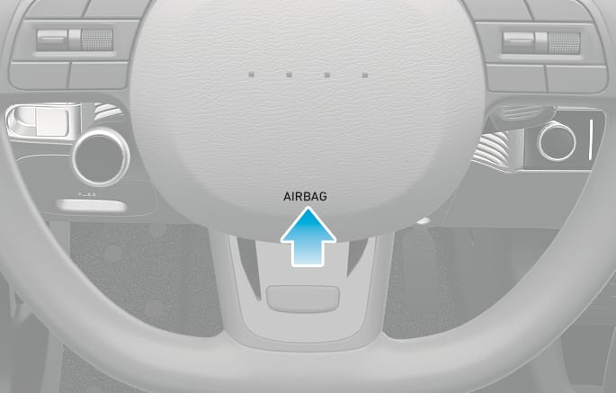

운전석 에어백
-
운전에 방해가 되지 않는 범위 내에서 스티어링 휠로부터 최대한 멀리 떨어져 앉으십시오. 스티어링 휠과의 거리가 지나치게 가까운 경우, 에어백 작동 시 치명적인 부상을 입을 수 있습니다.
-
에어백과 운전자 사이에 어떤 물건도 놓아두지 마십시오. 에어백 팽창 시의 충격으로 인해 물체가 운전자에게 부딪치면 운전자가 심각한 부상을 입거나 사망할 수 있습니다.
-
스티어링 휠 커버에 액세서리를 부착하지 마십시오. 임의의 액세서리를 부착하는 경우 에어백의 작동을 방해할 수 있습니다.

2C_DriverAirbag

2C_DriverAirbagDeployment
운전석 에어백은 스티어링 휠 안에 설치되어 있습니다.